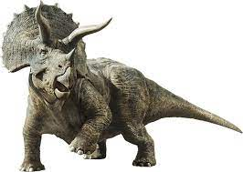
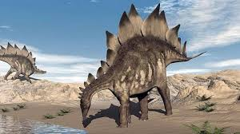

Ankylosaurus magniventris (en gr. «lagarto acorazado de vientre grande») es la única especie conocida del género fósil Ankylosaurus de dinosaurios tireofóros anquilosáuridos, que vivió a finales del período Cretácico, hace aproximadamente 68 a 66 millones de años, durante el Maastrichtiense, en lo que hoy es Norteamérica.1Al igual que otros anquilosáuridos, Ankylosaurus se distinguía por su pesada armadura y un gran mazo caudal, siendo probablemente el más grande de su grupo. Aunque hace falta descubrir esqueletos completos y algunos de sus parientes poseen muchos más fósiles recobrados, Ankylosaurus es considerado el dinosaurio acorazado más destacado y representativo.
Siendo el anquilosáurido conocido más grande, Ankylosaurus medía hasta 6,25 m de largo, 1,7 de altura, y pesaba 6 toneladas. Fue un animal cuadrúpedo, con un cuerpo amplio y robusto. Tenía un cráneo grande y ancho, con dos cuernos apuntando hacia atrás desde la parte posterior de la cabeza, y dos cuernos por debajo de estos que apuntaban hacia atrás y hacia abajo. La parte delantera del rostro estaba cubierto de un pico, con hileras de dientes pequeños, en forma de hoja más detrás de él. Estaba cubierto de placas de armadura u osteodermos, con medios anillos óseos que cubren el cuello, y tenía un gran mazo en el extremo de su cola. Huesos en el cráneo y otras partes del cuerpo se fusionaron, lo que aumentaba su resistencia, y esta característica es la fuente del nombre del género.
Ankylosaurus es un miembro de la familia Ankylosauridae y sus parientes más cercanos parece ser Anodontosaurus y Euoplocephalus. Ankylosaurus se cree que ha sido un animal lento, capaz de hacer movimientos rápidos cuando sea necesario. Su hocico ancho indica que realizaba un pastoreo no selectivo. Los senos paranasales y fosas nasales en el hocico pueden haber sido para el intercambio de calor y agua o haya desempeñado un papel en la vocalización. La porra de la cola se cree que fue utilizada para la defensa contra los depredadores o en el combate intraespecífico. Ankylosaurus se ha encontrado en las formaciones Hell Creek, lance y Scollard, pero parecen haber sido poco frecuentes en su entorno. A pesar de que vivía junto a un nodosáurido, sus rangos y nichos ecológicos no parecen haber solapado y Ankylosaurus pueden haber vivido en zonas de montaña. Ankylosaurus vivió junto con dinosaurios como el Tyrannosaurus, Triceratops y Edmontosaurus.
El Ankylosaurus es el dinosaurio anquilosáurido más grande conocido, se estima que habría alcanzado hasta 6,25 metros de largo, 1,5 m de ancho y 1,7 m de alto en la cadera. y debió pesar alrededor de las 6 toneladas, Esta longitud ha sido propuesto por el paleontólogo estadounidense Kenneth Carpenter, y está basado en el cráneo más grande conocido, espécimen NMC 8880, que mide de 64,5 centímetros de largo y 74,5 cm de ancho. El cráneo más pequeño conocido, el espécimen AMNH 5214 es de 55,5 cm de largo y 64,5 cm de ancho, y se estima que este espécimen que habría medido entre 5,4 m de largo y alrededor de 1,4 m de altura.Otros autores han propuesto una longitud de 7 m, 8-9 m, o más de 9 m. La peso del animal se ha estimado en 6 toneladas.
La estructura de la mayor parte del esqueleto de Ankylosaurus, incluyendo la mayor parte de la pelvis, la cola y los pies, aún se desconoce.La estructura de su cuerpo era baja y muy ancha. Fue un dinosaurio cuadrúpedo, con los miembros traseros más largos que los delanteros.La escápula y coracoides del espécimen AMNH 5895 se fusionaron, y tenía entesis, tejido conectivo, para diversas inserciones musculares. La escápula media de 61,5 cm de largo. El húmero era corto y muy ancho de alrededor de 54 cm de longitud en la espécimen del AMNH 5214. El fémur era muy robusto, y 67 cm de largo en AMNH 5214. Mientras los pies de Ankylosaurus se conocen de forma incompleta, la patas traseras probablemente tenía tres dedos de los pies, como es el caso en los animales relacionados.El cráneo era estrecho y triangular, más ancho que largo. Al igual que otros anquilosaurianos, Ankylosaurus era herbívoro, y su boca estaba dotada de pequeños dientes con forma de hoja que eran aptos para cortar la vegetación, los más pequeños en comparación al cuerpo de cualquier otro anquilosáurido.Ankylosaurus no compartía las series de dientes moledores de los ceratópsidos y hadrosáuridos contemporáneos, demostrando una masticación muy escasa. Tanto huesos del cráneo como en otras regiones del cuerpo, estaban fusionados para aumentar su fuerza y rigidez.
Las vértebras cervicales tenía grandes espinas neurales que el aumentan en altura hacia el cuerpo. La parte delantera de las espinas neurales había entesis, que era común entre los dinosaurios adultos bien desarrollados, e indica la presencia de grandes ligamentos que ayudaron a apoyar la cabeza masiva. Las vértebras dorsales de la espalda tenía cuerpos que eran cortos en relación con su anchura, y sus espinas neurales eran cortas y estrechas. Las vértebras dorsales estaban estrechamente espaciadas, lo que limita el movimiento hacia abajo de la espalda. En las espinas neurales se habían osificado tendones, que también se superponen algunas de las vértebras. Las costillas de las últimas cuatro vértebra estaban fusionadas a ellas, y la caja torácica fue muy amplia en esta parte del cuerpo. Las costillas tenía cicatrices que muestran dónde músculos se habrían unidos a ellas. La vértebra caudalestenía centros que fueron ligeramente amfhicoelos, lo que significa que se cóncavos en ambos lados. Los procesos articulares entrelazados de la zigapófisis de la vértebra caudal forman una forma de V cuando se ve desde arriba.
 |
 |
 |
 |
 |
 |